Chantrea Systems
Every version of this page since 19 Nov 2026, newest first: what changed, and the captures and videos as the page showed them at the time.
Chaque version de cette page depuis le 19 nov. 2026, de la plus récente à la plus ancienne : ce qui a changé, et les captures et vidéos telles que la page les montrait à l’époque.
គ្រប់កំណែនៃទំព័រនេះ តាំងពីថ្ងៃទី 19 វិច្ឆិកា 2026 ពីថ្មីបំផុតទៅចាស់៖ អ្វីដែលបានផ្លាស់ប្តូរ និងរូបថតអេក្រង់ និងវីដេអូ ដូចដែលទំព័របានបង្ហាញនៅពេលនោះ។
Nothing on this page has been regenerated: every capture and video is the file the site published at the time, recovered from its Git history. What the site never published is not here. Since 21 November 2026, every change to the project page adds a version here, and the captures, videos and Last changes it replaces are kept.Rien sur cette page n’a été régénéré : chaque capture et chaque vidéo est le fichier que le site publiait à l’époque, retrouvé dans son historique Git. Ce que le site n’a jamais publié n’y figure pas. Depuis le 21 novembre 2026, chaque changement de la page du projet ajoute ici une version, et les captures, vidéos et derniers changements qu’il remplace sont conservés.គ្មានអ្វីនៅលើទំព័រនេះត្រូវបានបង្កើតឡើងវិញទេ៖ រូបថតអេក្រង់ និងវីដេអូនីមួយៗ គឺជាឯកសារដែលគេហទំព័របានផ្សាយនៅពេលនោះ ដែលបានយកមកវិញពីប្រវត្តិ Git របស់វា។ អ្វីដែលគេហទំព័រមិនដែលផ្សាយ មិនមាននៅទីនេះទេ។ តាំងពីថ្ងៃទី 21 ខែវិច្ឆិកា ឆ្នាំ 2026 ការផ្លាស់ប្តូរនីមួយៗនៃទំព័រគម្រោង បន្ថែមកំណែមួយនៅទីនេះ ហើយរូបថតអេក្រង់ វីដេអូ និងការផ្លាស់ប្តូរចុងក្រោយ ដែលវាជំនួស ត្រូវបានរក្សាទុក។
From the latest to the first.De la plus récente à la première.ពីកំណែចុងក្រោយ ដល់កំណែដំបូង។
-
A What’s new pageUne page « Quoi de neuf ? »ទំព័រ «មានអ្វីថ្មី?»
The page follows the site’s commit of 26 November 2026, which adds a What’s new page: the twenty latest commits of the public repositories, read from GitHub while the site is built and not in the visitor’s browser, a schedule that rebuilds the site four times a day, and a full menu that now shows from 1,100 px wide. The figures move to 127 pages, 25 in each language, and 87 commits, and a capture of the new page, taken on the site online, joins the gallery.
La page suit le commit du site du 26 novembre 2026, qui ajoute une page « Quoi de neuf ? » : les vingt derniers commits des dépôts publics, lus sur GitHub pendant la construction du site et non dans le navigateur du visiteur, une tâche programmée qui reconstruit le site quatre fois par jour, et un menu complet qui s’affiche désormais à partir de 1 100 px de large. Les chiffres passent à 127 pages, 25 par langue, et 87 commits, et une capture de la nouvelle page, prise sur le site en ligne, rejoint la galerie.
ទំព័រនេះធ្វើតាម commit របស់គេហទំព័រ នៅថ្ងៃទី 26 ខែវិច្ឆិកា ឆ្នាំ 2026 ដែលបន្ថែមទំព័រ «មានអ្វីថ្មី?»៖ commit ចុងក្រោយម្ភៃនៃឃ្លាំងកូដសាធារណៈ ដែលអានពី GitHub នៅពេល build គេហទំព័រ មិនមែននៅក្នុង browser របស់អ្នកទស្សនាទេ កាលវិភាគមួយដែល build គេហទំព័រឡើងវិញបួនដងក្នុងមួយថ្ងៃ និងម៉ឺនុយពេញលេញដែលឥឡូវបង្ហាញចាប់ពីទទឹង 1,100 px។ តួលេខប្តូរទៅ 127 ទំព័រ គឺ 25 ក្នុងមួយភាសា និង 87 commits ហើយរូបថតអេក្រង់នៃទំព័រថ្មី ដែលថតលើគេហទំព័រដែលកំពុងដំណើរការ ត្រូវបានបន្ថែមទៅក្នុងវិចិត្រសាល។
Taken off the page’s Last changes, kept hereSortis des derniers changements de la page, gardés iciដកចេញពីការផ្លាស់ប្តូរចុងក្រោយនៃទំព័រ រក្សាទុកនៅទីនេះ- Four domains, new offers and a Jobs page
The services are rewritten around four domains: software and digital solutions, AI and automation, infrastructure and systems, cybersecurity and IT asset management. Infrastructure now covers new hardware from official distributors, cabling, Xen, XCP-ng, Xen Orchestra and XenServer, monitoring with Zabbix and a maintenance contract; AI can be installed on the client’s premises with Ollama. New offers appear: Odoo, Nextcloud and Mattermost, Odoo module development, and Odoo in Khmer for Cambodia. A Jobs page looks for a certified English or French ↔ Khmer translator; the texts no longer say that one person runs the company or that the client always deals with the same person; a Client area link waits in the header until its address is set.
- Quatre domaines, de nouvelles offres et une page Recrutement
Les services sont réécrits autour de quatre domaines : logiciels et solutions numériques, IA et automatisation, infrastructure et systèmes, cybersécurité et gestion du parc. L’infrastructure couvre désormais le matériel neuf des distributeurs officiels, le câblage, Xen, XCP-ng, Xen Orchestra et XenServer, la supervision avec Zabbix et un contrat de maintenance ; l’IA peut être installée chez le client avec Ollama. De nouvelles offres apparaissent : Odoo, Nextcloud et Mattermost, le développement de modules Odoo, et Odoo en khmer pour le Cambodge. Une page Recrutement cherche un traducteur agréé anglais ou français ↔ khmer ; les textes ne disent plus qu’une seule personne fait tourner l’entreprise ni que le client parle toujours à la même personne ; un lien « Espace client » attend dans l’en-tête que son adresse soit renseignée.
- វិស័យបួន សេវាកម្មថ្មី និងទំព័រឱកាសការងារ
សេវាកម្មត្រូវបានសរសេរឡើងវិញ ជុំវិញវិស័យបួន៖ កម្មវិធី និងដំណោះស្រាយឌីជីថល បញ្ញាសិប្បនិម្មិត និងស្វ័យប្រវត្តិកម្ម ហេដ្ឋារចនាសម្ព័ន្ធ និងប្រព័ន្ធ និងសន្តិសុខសាយប័រ និងការគ្រប់គ្រងឧបករណ៍ព័ត៌មានវិទ្យា។ ហេដ្ឋារចនាសម្ព័ន្ធឥឡូវគ្របដណ្តប់លើសម្ភារៈថ្មីពីអ្នកចែកចាយផ្លូវការ ការតភ្ជាប់ខ្សែ Xen, XCP-ng, Xen Orchestra និង XenServer ការឃ្លាំមើលជាមួយ Zabbix និងកិច្ចសន្យាថែទាំ ហើយ AI អាចដំឡើងនៅទីតាំងរបស់អតិថិជនជាមួយ Ollama។ សេវាកម្មថ្មីៗបានលេចឡើង៖ Odoo, Nextcloud និង Mattermost ការអភិវឌ្ឍ module Odoo និង Odoo ជាភាសាខ្មែរសម្រាប់កម្ពុជា។ ទំព័រឱកាសការងារមួយ ស្វែងរកអ្នកបកប្រែដែលមានការទទួលស្គាល់ ភាសាអង់គ្លេស ឬបារាំង ↔ ខ្មែរ។ អត្ថបទលែងនិយាយថា មនុស្សតែម្នាក់ដំណើរការក្រុមហ៊ុន ឬថាអតិថិជនតែងតែនិយាយជាមួយមនុស្សតែម្នាក់ដដែលទៀតហើយ។ តំណ «តំបន់អតិថិជន» រង់ចាំនៅក្នុងផ្នែកក្បាល រហូតដល់អាសយដ្ឋានរបស់វាត្រូវបានកំណត់។
1 capture1 captureរូបថតអេក្រង់ 1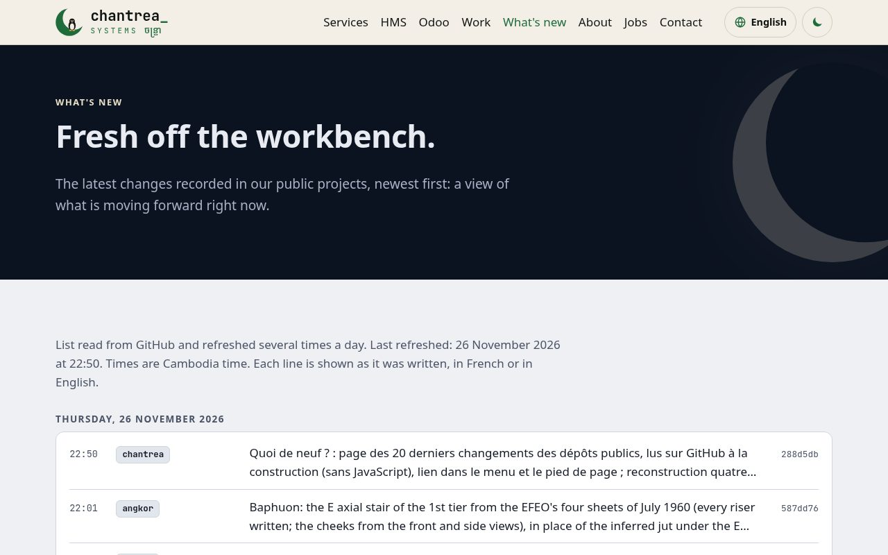
On the pageSur la pageនៅលើទំព័រ -
Four domains, Odoo and VigieQuatre domaines, Odoo et Vigieវិស័យបួន Odoo និង Vigie
The page catches up with the repository: the services rebuilt around four domains with seven detailed offers (Odoo, Nextcloud, Mattermost, Odoo modules, Odoo in Khmer, Vigie), HMS on the demo of a real hotel, the Work page in three groups with pages for Acpc, ASokoban, 3D Snake and Velocity, a Jobs page, and 122 pages built; the company is no longer described as one person. Its last changes now run to 25 November. The screenshots are retaken on the live site on 26 November, with three new pages among them: Services, Vigie and Odoo in Khmer.
La page rattrape le dépôt : les services reconstruits autour de quatre domaines et de sept offres détaillées (Odoo, Nextcloud, Mattermost, modules Odoo, Odoo en khmer, Vigie), HMS sur la démonstration d’un hôtel réel, la page Réalisations en trois groupes avec des pages pour Acpc, ASokoban, 3D Snake et Velocity, une page Recrutement, et 122 pages générées ; l’entreprise n’est plus décrite comme une seule personne. Ses derniers changements vont désormais jusqu’au 25 novembre. Les captures sont refaites sur le site en ligne le 26 novembre, avec trois nouvelles pages : Services, Vigie et Odoo en khmer.
ទំព័រនេះតាមទាន់ឃ្លាំងកូដ៖ សេវាកម្មដែលបានរៀបចំឡើងវិញជុំវិញវិស័យបួន និងសេវាកម្មលម្អិតប្រាំពីរ (Odoo, Nextcloud, Mattermost, module Odoo, Odoo ជាភាសាខ្មែរ, Vigie) HMS លើការសាកល្បងរបស់សណ្ឋាគារពិត ទំព័រស្នាដៃជាបីក្រុម ជាមួយទំព័រសម្រាប់ Acpc, ASokoban, 3D Snake និង Velocity ទំព័រឱកាសការងារ និងទំព័រចំនួន 122 ដែលបានបង្កើត។ ក្រុមហ៊ុនលែងត្រូវបានពិពណ៌នាថាជាមនុស្សតែម្នាក់ទៀតហើយ។ ការផ្លាស់ប្តូរចុងក្រោយរបស់វា ឥឡូវនេះរហូតដល់ថ្ងៃទី 25 ខែវិច្ឆិកា។ រូបថតអេក្រង់ត្រូវបានថតឡើងវិញពីគេហទំព័រផ្ទាល់ នៅថ្ងៃទី 26 ខែវិច្ឆិកា រួមទាំងទំព័រថ្មីបី៖ សេវាកម្ម Vigie និង Odoo ជាភាសាខ្មែរ។
Taken off the page’s Last changes, kept hereSortis des derniers changements de la page, gardés iciដកចេញពីការផ្លាស់ប្តូរចុងក្រោយនៃទំព័រ រក្សាទុកនៅទីនេះ- A page for Cambodia Rally
Cambodia Rally gets its own page in the five languages, with a gallery of nine screenshots from the game’s repository. The home page gives it a section after HMS, its card on the Work page leads to it, and the top menu and the footer link to it. The full menu now shows from 1100 px wide, with the folding menu below, so that it fits in French and Russian.
- The logo and a cream light theme
The penguin sitting in a crescent moon becomes the logo, in the header, the footer, the language page, the “page not found” and the favicon, beside the logotype chantrea_ SYSTEMS ចន្ទ្រា. Its Khmer name is set in Kantumruy Pro and read from the Khmer text file, so it is reviewed like the other Khmer texts. In the light theme the header and footer turn cream with a light version of the logo, and the favicon follows the browser’s light or dark mode.
- Screenshots of the demo hotel
The HMS page gains ten screenshots from the hms repository, taken in a demo hotel with made-up data; each language opens on a screenshot in that language when there is one. The images are served in AVIF and WebP in several sizes, load only as needed and have captions and alt texts in the five languages. Full reports and the desktop app’s login screen were left out.
- Four more languages, and their review
The French texts are translated into English, Khmer, Russian and Chinese. A script lists every translated text beside its French original for native speakers to review, required for Khmer and advised for Russian and Chinese, with a status file to mark each one as reviewed.
- The site, in French first
The site starts as an Astro project with one configuration file and its texts in French: the home page with the light and dark theme, the language choice and a phone menu that needs no JavaScript, then one page per service, HMS, the work, About and Contact. GitHub Pages publishes it from
main. The README explains how to edit a text, add a project and publish, and the steps for a domain of its own are written down.
- Une page pour Cambodia Rally
Cambodia Rally a sa propre page dans les cinq langues, avec une galerie de neuf captures tirées du dépôt du jeu. L’accueil lui consacre une section après HMS, sa fiche dans les réalisations y renvoie, et le menu du haut comme le pied de page y mènent. Le menu complet s’affiche désormais à partir de 1100 px de large, le menu repliable en dessous, pour tenir en français et en russe.
- Le logo et un thème clair crème
Le pingouin assis dans un croissant de lune devient le logo, dans l’en-tête, le pied de page, la page de choix de langue, la page « introuvable » et le favicon, à côté du logotype chantrea_ SYSTEMS ចន្ទ្រា. Son nom khmer est composé en Kantumruy Pro et lu dans le fichier de textes khmers : il passe par la même relecture que les autres. En thème clair, l’en-tête et le pied de page passent en crème avec une version claire du logo, et le favicon suit le mode clair ou sombre du navigateur.
- Les captures de l’hôtel de démonstration
La page HMS reçoit dix captures du dépôt hms, prises dans un hôtel de démonstration aux données fictives ; chaque langue s’ouvre sur une capture dans cette langue quand elle existe. Les images sont servies en AVIF et WebP en plusieurs tailles, ne se chargent qu’au besoin et ont légendes et textes alternatifs dans les cinq langues. Les rapports complets et l’écran de connexion de l’application de bureau ont été écartés.
- Quatre langues de plus, et leur relecture
Les textes français sont traduits en anglais, khmer, russe et chinois. Un script liste chaque texte traduit à côté de son original français pour la relecture par des locuteurs natifs, obligatoire pour le khmer et conseillée pour le russe et le chinois, avec un fichier d’état pour marquer chacun comme relu.
- Le site, d’abord en français
Le site naît comme un projet Astro, avec un seul fichier de configuration et ses textes en français : l’accueil avec le thème clair et sombre, le choix de la langue et un menu de téléphone sans JavaScript, puis une page par service, HMS, les réalisations, À propos et Contact. GitHub Pages le publie depuis
main. Le README explique comment modifier un texte, ajouter une réalisation et publier, et la marche à suivre pour un nom de domaine propre est notée.
- ទំព័រមួយសម្រាប់ Cambodia Rally
Cambodia Rally មានទំព័រផ្ទាល់ខ្លួនជាប្រាំភាសា ជាមួយវិចិត្រសាលរូបថតអេក្រង់ប្រាំបួន ដែលយកពីឃ្លាំងកូដរបស់ហ្គេម។ ទំព័រដើមមានផ្នែកមួយសម្រាប់វា បន្ទាប់ពី HMS កាតរបស់វានៅលើទំព័រស្នាដៃនាំទៅទំព័រនោះ ហើយម៉ឺនុយខាងលើ និងផ្នែកបាតទំព័រក៏មានតំណទៅវាដែរ។ ម៉ឺនុយពេញលេញបង្ហាញចាប់ពីទទឹង 1100 px ឡើងទៅ ហើយក្រោមនោះជាម៉ឺនុយបត់ ដើម្បីឱ្យវាសមល្មមជាភាសាបារាំង និងរុស្ស៊ី។
- ឡូហ្គោ និងផ្ទៃភ្លឺពណ៌ក្រែម
សត្វភេនឃ្វីនអង្គុយក្នុងព្រះចន្ទអឌ្ឍចន្ទ ក្លាយជាឡូហ្គោ នៅលើផ្នែកក្បាល ផ្នែកបាតទំព័រ ទំព័រជ្រើសរើសភាសា ទំព័រ «រកមិនឃើញទំព័រ» និង favicon នៅក្បែរឡូហ្គោអក្សរ chantrea_ SYSTEMS ចន្ទ្រា។ ឈ្មោះខ្មែររបស់វាប្រើពុម្ពអក្សរ Kantumruy Pro ហើយត្រូវបានអានពីឯកសារអត្ថបទខ្មែរ ដូច្នេះវាត្រូវបានពិនិត្យដូចអត្ថបទខ្មែរផ្សេងទៀតដែរ។ នៅផ្ទៃភ្លឺ ផ្នែកក្បាល និងផ្នែកបាតទំព័រប្តូរទៅពណ៌ក្រែម ជាមួយឡូហ្គោកំណែភ្លឺ ហើយ favicon ប្តូរតាមផ្ទៃភ្លឺ ឬផ្ទៃងងឹតរបស់ browser។
- រូបថតអេក្រង់នៃសណ្ឋាគារសាកល្បង
ទំព័រ HMS ទទួលបានរូបថតអេក្រង់ដប់ ពីឃ្លាំងកូដ hms ដែលថតនៅក្នុងសណ្ឋាគារសាកល្បង ជាមួយទិន្នន័យប្រឌិត។ ភាសានីមួយៗចាប់ផ្តើមដោយរូបថតអេក្រង់ជាភាសានោះ ប្រសិនបើមាន។ រូបភាពមានជា AVIF និង WebP ច្រើនទំហំ ផ្ទុកតែនៅពេលត្រូវការ ហើយមានចំណងជើង និងអត្ថបទជំនួសជាប្រាំភាសា។ របាយការណ៍ពេញលេញ និងអេក្រង់ចូលប្រើរបស់កម្មវិធីកុំព្យូទ័រ ត្រូវបានទុកចោល។
- ភាសាបួនទៀត និងការពិនិត្យរបស់វា
អត្ថបទបារាំងត្រូវបានបកប្រែជាភាសាអង់គ្លេស ខ្មែរ រុស្ស៊ី និងចិន។ script មួយរៀបរាប់អត្ថបទដែលបានបកប្រែនីមួយៗ នៅជាប់នឹងអត្ថបទបារាំងដើម ដើម្បីឱ្យអ្នកនិយាយភាសាកំណើតពិនិត្យ៖ ចាំបាច់សម្រាប់ភាសាខ្មែរ និងគួរធ្វើសម្រាប់ភាសារុស្ស៊ី និងចិន ជាមួយឯកសារស្ថានភាព ដើម្បីកត់សម្គាល់អត្ថបទនីមួយៗថាបានពិនិត្យរួច។
- គេហទំព័រ ជាភាសាបារាំងមុនគេ
គេហទំព័រចាប់ផ្តើមជាគម្រោង Astro ជាមួយឯកសារកំណត់រចនាសម្ព័ន្ធតែមួយ និងអត្ថបទជាភាសាបារាំង៖ ទំព័រដើមជាមួយផ្ទៃភ្លឺ និងផ្ទៃងងឹត ការជ្រើសរើសភាសា និងម៉ឺនុយលើទូរស័ព្ទដែលមិនត្រូវការ JavaScript បន្ទាប់មកទំព័រមួយសម្រាប់សេវាកម្មនីមួយៗ HMS ស្នាដៃ អំពីខ្ញុំ និងទំនាក់ទំនង។ GitHub Pages បោះផ្សាយវាពី
main។ README ពន្យល់ពីរបៀបកែអត្ថបទ បន្ថែមស្នាដៃ និងបោះផ្សាយ ហើយជំហានសម្រាប់ឈ្មោះដែនផ្ទាល់ខ្លួន ត្រូវបានសរសេរទុករួចហើយ។
18 captures18 capturesរូបថតអេក្រង់ 18
On the pageSur la pageនៅលើទំព័រ 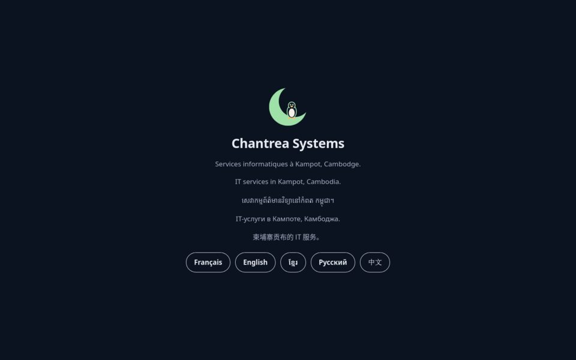
On the pageSur la pageនៅលើទំព័រ 
On the pageSur la pageនៅលើទំព័រ 
On the pageSur la pageនៅលើទំព័រ 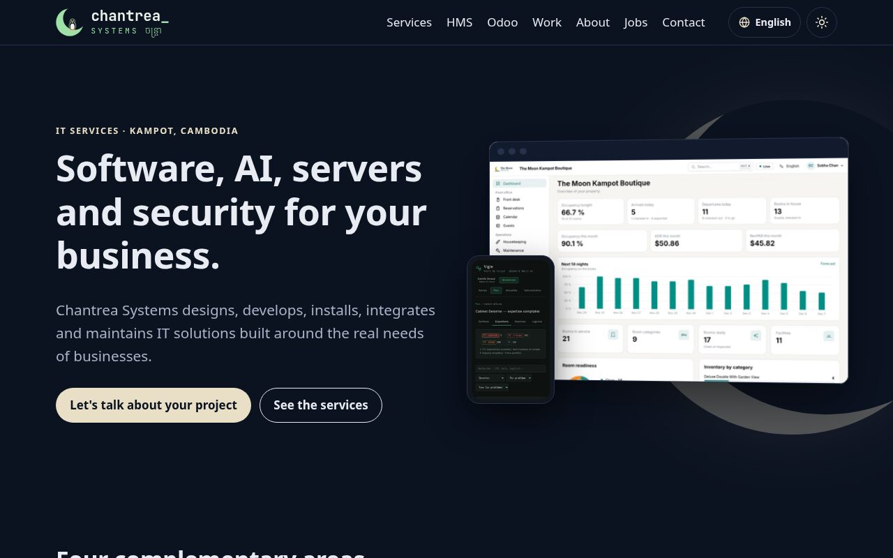
On the pageSur la pageនៅលើទំព័រ 
On the pageSur la pageនៅលើទំព័រ 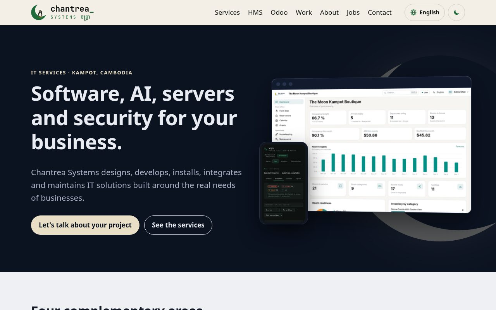
On the pageSur la pageនៅលើទំព័រ 
On the pageSur la pageនៅលើទំព័រ 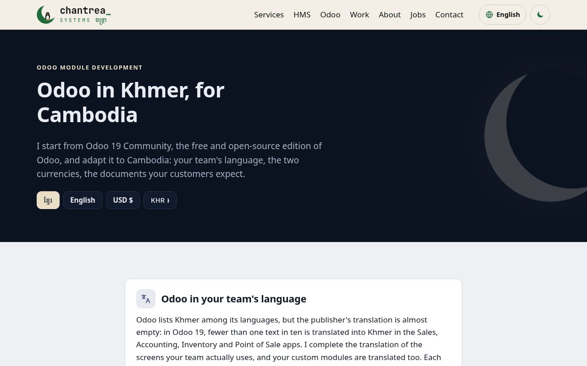
On the pageSur la pageនៅលើទំព័រ 
On the pageSur la pageនៅលើទំព័រ 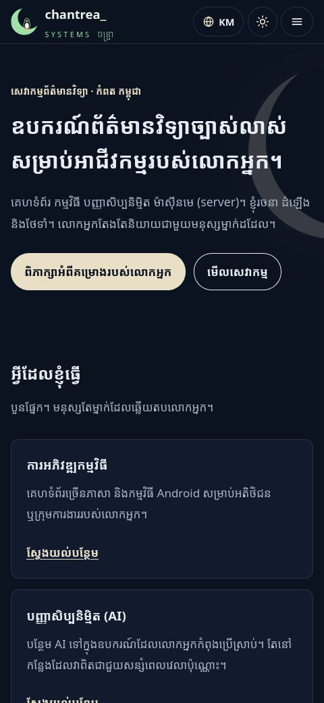
On the pageSur la pageនៅលើទំព័រ 
On the pageSur la pageនៅលើទំព័រ 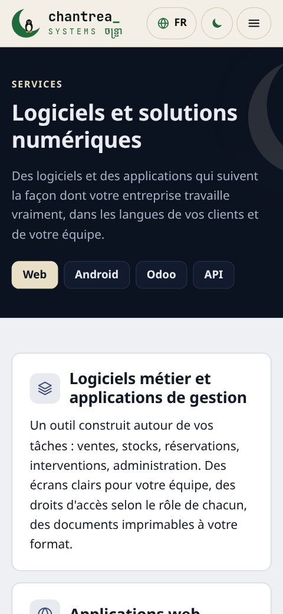
On the pageSur la pageនៅលើទំព័រ 
On the pageSur la pageនៅលើទំព័រ 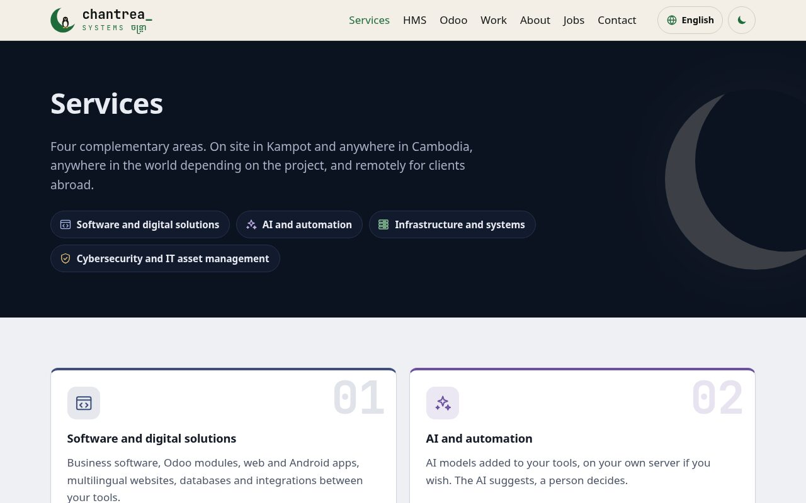
On the pageSur la pageនៅលើទំព័រ 
On the pageSur la pageនៅលើទំព័រ 
On the pageSur la pageនៅលើទំព័រ 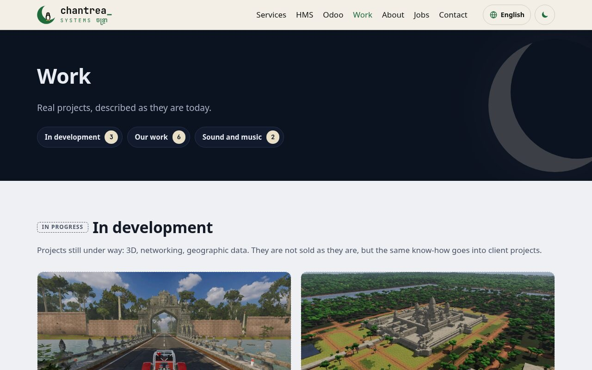
On the pageSur la pageនៅលើទំព័រ -
Last changesDerniers changementsការផ្លាស់ប្តូរចុងក្រោយ
The page now ends with a summary of the repository’s latest commits, in English, French and Khmer.
La page se termine désormais par un résumé des derniers commits du dépôt, en anglais, en français et en khmer.
ឥឡូវនេះ ទំព័របញ្ចប់ដោយសេចក្តីសង្ខេបនៃ commit ចុងក្រោយរបស់ repository ជាភាសាអង់គ្លេស បារាំង និងខ្មែរ។
-
Its own pageSa propre pageទំព័រផ្ទាល់ខ្លួន
The Chantrea Systems website gets its page in English, French and Khmer: the static Astro site in five languages, without cookies or trackers, its moonlit light and dark theme and its logo, with screenshots.
Le site de Chantrea Systems reçoit sa page en anglais, en français et en khmer : le site statique Astro en cinq langues, sans cookies ni traceurs, son thème clair et sombre au clair de lune et son logo, avec des captures.
គេហទំព័រ Chantrea Systems ទទួលបានទំព័ររបស់ខ្លួន ជាភាសាអង់គ្លេស បារាំង និងខ្មែរ៖ គេហទំព័រ Astro ឋិតិវន្តជាប្រាំភាសា គ្មាន cookies ឬកម្មវិធីតាមដាន ស្បែកភ្លឺ និងងងឹតក្រោមពន្លឺព្រះចន្ទ និងនិមិត្តសញ្ញារបស់វា ជាមួយរូបថតអេក្រង់។
15 captures15 capturesរូបថតអេក្រង់ 15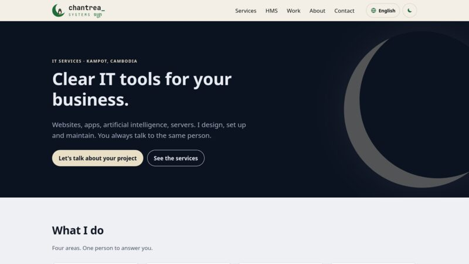
Replaced on 26 Nov 2026Remplacée le 26 nov. 2026ត្រូវបានជំនួស 26 វិច្ឆិកា 2026 
Replaced on 26 Nov 2026Remplacée le 26 nov. 2026ត្រូវបានជំនួស 26 វិច្ឆិកា 2026 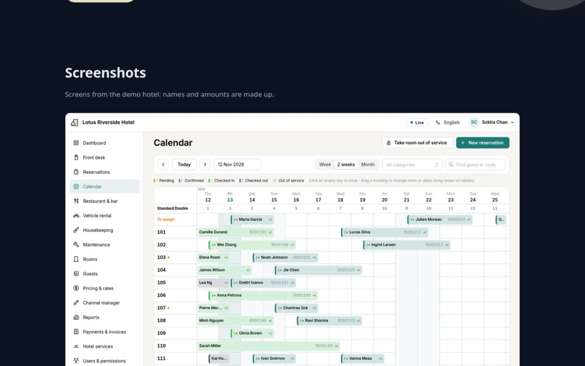
Replaced on 26 Nov 2026Remplacée le 26 nov. 2026ត្រូវបានជំនួស 26 វិច្ឆិកា 2026 
Replaced on 26 Nov 2026Remplacée le 26 nov. 2026ត្រូវបានជំនួស 26 វិច្ឆិកា 2026 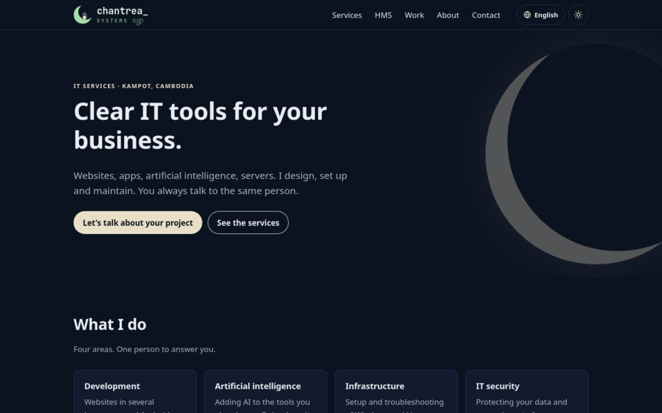
Replaced on 26 Nov 2026Remplacée le 26 nov. 2026ត្រូវបានជំនួស 26 វិច្ឆិកា 2026 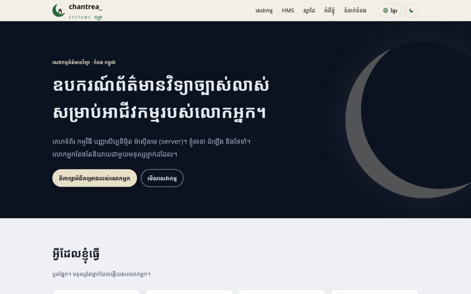
Replaced on 26 Nov 2026Remplacée le 26 nov. 2026ត្រូវបានជំនួស 26 វិច្ឆិកា 2026 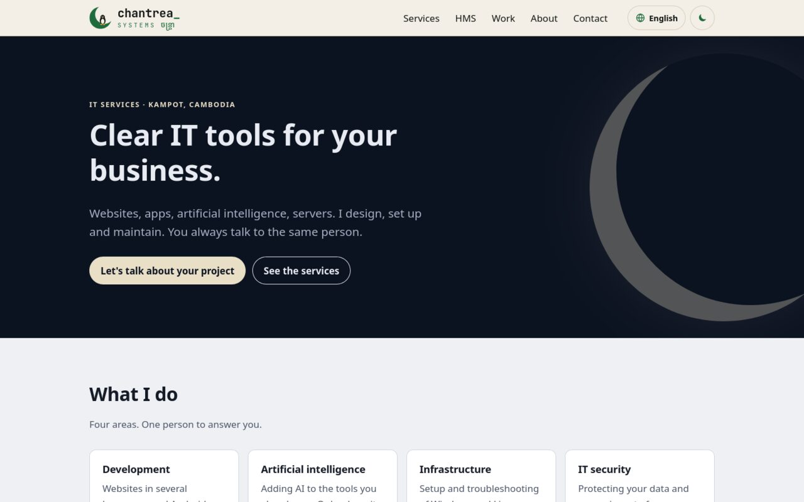
Replaced on 26 Nov 2026Remplacée le 26 nov. 2026ត្រូវបានជំនួស 26 វិច្ឆិកា 2026 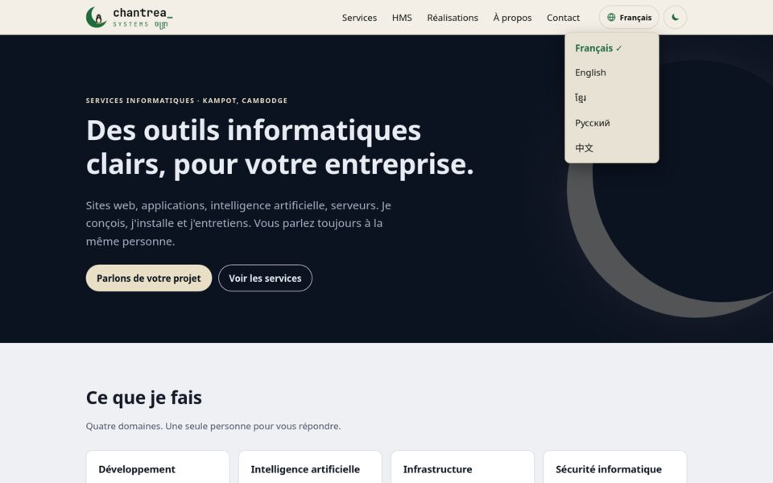
Replaced on 26 Nov 2026Remplacée le 26 nov. 2026ត្រូវបានជំនួស 26 វិច្ឆិកា 2026 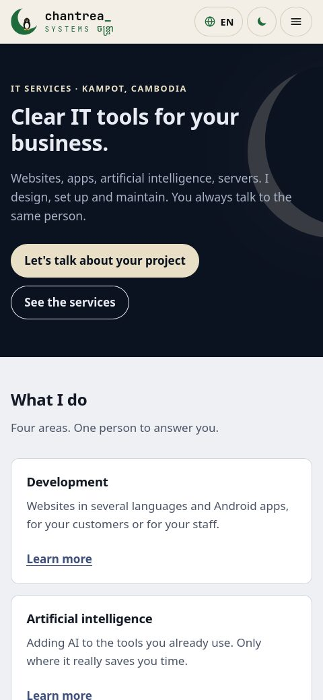
Replaced on 26 Nov 2026Remplacée le 26 nov. 2026ត្រូវបានជំនួស 26 វិច្ឆិកា 2026 
Replaced on 26 Nov 2026Remplacée le 26 nov. 2026ត្រូវបានជំនួស 26 វិច្ឆិកា 2026 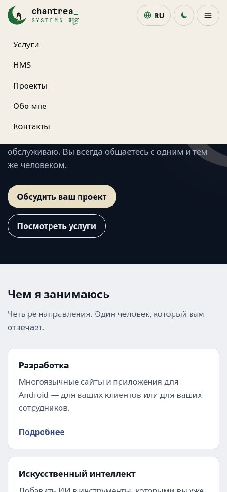
Replaced on 26 Nov 2026Remplacée le 26 nov. 2026ត្រូវបានជំនួស 26 វិច្ឆិកា 2026 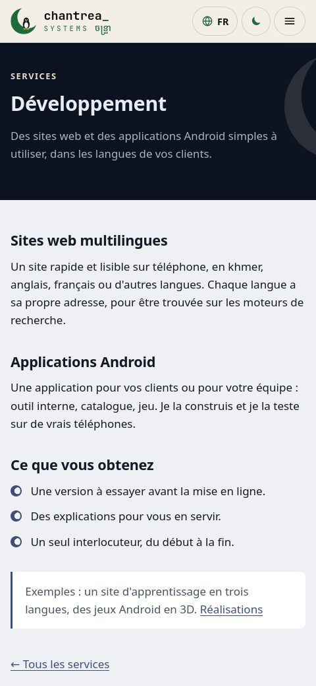
Replaced on 26 Nov 2026Remplacée le 26 nov. 2026ត្រូវបានជំនួស 26 វិច្ឆិកា 2026 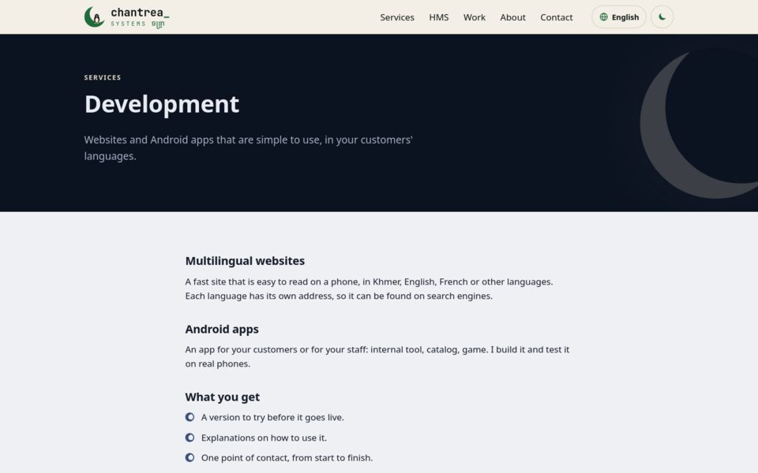
Replaced on 26 Nov 2026Remplacée le 26 nov. 2026ត្រូវបានជំនួស 26 វិច្ឆិកា 2026 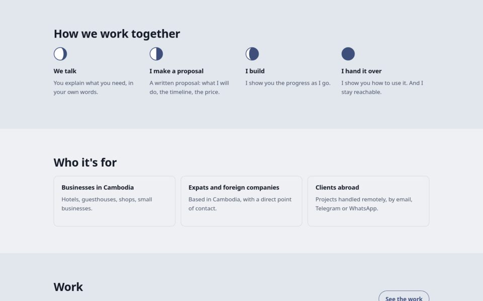
Replaced on 26 Nov 2026Remplacée le 26 nov. 2026ត្រូវបានជំនួស 26 វិច្ឆិកា 2026 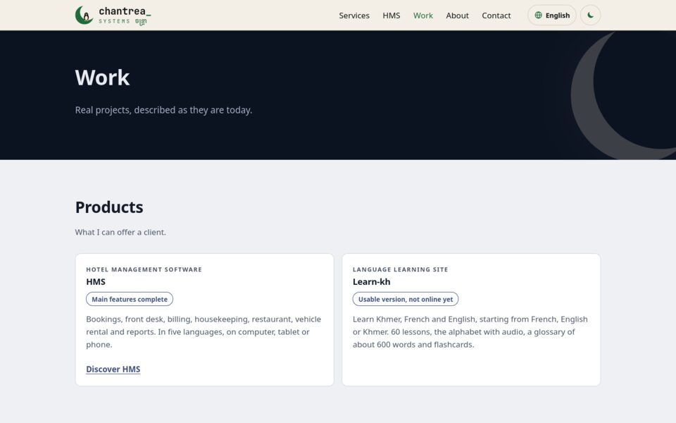
Replaced on 26 Nov 2026Remplacée le 26 nov. 2026ត្រូវបានជំនួស 26 វិច្ឆិកា 2026